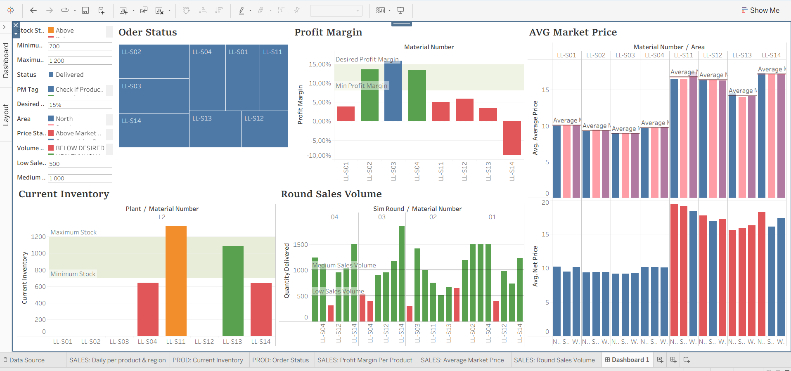

My team ran a multi-round company simulation covering procurement, production, sales, and accounting. My role was to design and build the dashboard the whole team used to make coordinated, round-by-round decisions.

The main dashboard view — inventory and procurement on the left, sales and pricing on the right.
The dashboard is deliberately split in two: the left side supports factory and inventory decisions, the right side supports sales and pricing decisions. Every chart uses colour — red, orange, green — as a direct decision signal, so any team member could glance at it mid-round and know what to do next without reading raw numbers.
I'd add an auto-refresh for the round filter — in practice, forgetting to advance it meant the Profit Margin view could silently show stale data, which is exactly the kind of error a decision-support tool should prevent rather than allow. Additionally, I'd have made clearer price & marketing decision-making process, because knowing it needs to be changed, didn't mean knowing by how much.